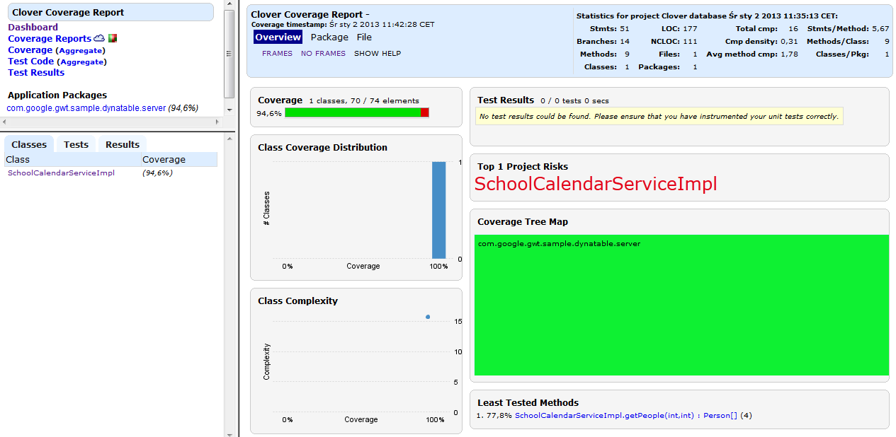

You can instrument server-side code only. This is due to a nature of the Google Web Toolkit which translates client and shared parts into a JavaScript. If you try to instrument client code, GWT will search for sources of all referenced classes, including the Clover instrumentation, which would cause a build failure.
Clover with manual GWT integration
The following example is based on GWT SDK 2.5.
1) Download and install
- GWT SDK 2.5 - http://code.google.com/p/google-web-toolkit/downloads/list (referred as <gwt-sdk>)
2) Open the sample DynaTable application (located in <gwt-sdk>/samples/DynaTable; referred as <project_dir>) and enhance build.xml file by adding:
- <clover-setup> with includes="'' for server-side code
- <clover-report> or <clover-html-report>
- clover.jar to runtime classpath
Example:
<project name="DynaTable" default="build" basedir=".">
<!-- Add following properties and targets -->
<property name="clover.jar" location="${user.home}/clover.jar"/>
<property name="clover.db" location="clover/db/clover.db"/>
<property name="clover.report" location="clover/report"/>
<taskdef resource="cloverlib.xml" classpath="${clover.jar}"/>
<target name="init" if="with.clover">
<clover-setup initstring="${clover.db}">
<fileset dir="src" includes="com/google/gwt/sample/dynatable/server/**"/>
</clover-setup>
</target>
<target name="report">
<clover-html-report initstring="${clover.db}" outdir="${clover.report}"/>
</target>
<!-- ... -->
<!-- Add the "init" target to depends="..." -->
<target name="javac" depends="libs, init" description="Compile java source to bytecode">
<!-- ... -->
</target>
<!-- Add the clover.jar to classpath -->
<target name="devmode" depends="javac" description="Run development mode">
<java failonerror="true" fork="true" classname="com.google.gwt.dev.DevMode">
<classpath>
<pathelement location="src"/>
<path refid="project.class.path"/>
<pathelement location="../../validation-api-1.0.0.GA.jar" />
<pathelement location="../../validation-api-1.0.0.GA-sources.jar" />
<pathelement location="${clover.jar}"/> <!-- ADD THIS -->
</classpath>
<!-- ... -->
</java>
</target>
<!-- ... -->
</project>
3) Build application, run tests and generate Clover report.
 GWT requires Java 1.6 or above
GWT requires Java 1.6 or above
ant devmode -Dwith.clover=true
# open web browser, close GWT console ...
ant reportOpen <project_dir>/clover/report/index.html file. You shall see a report like this:

References
See also